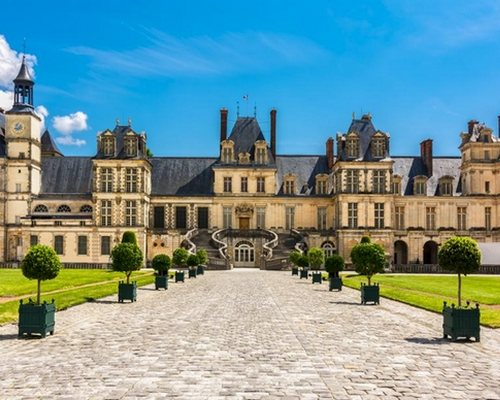

Parc Disneyland
Le Parc Disneyland (Disneyland Park en anglais) est un parc à thèmes de la Walt Disney Company situé en France, dans le secteur de Val d'Europe à Marne-la-Vallée en Seine-et-Marne, et qui a ouvert ses portes le 12 avril 1992.
